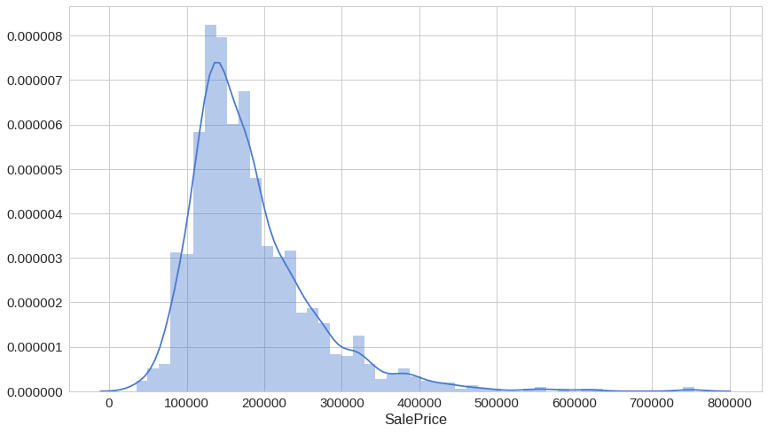
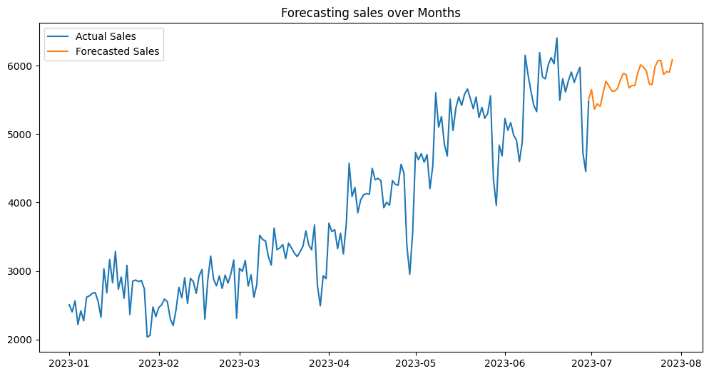

Hi, I'm Nikhil Gundluru, a recent graduate in Data Science with a passion for analyzing data and
building machine learning models. I’m driven to contribute to data-driven projects that solve
complex problems and drive meaningful outcomes. Explore my projects and skills to learn more
about my work.
Hello! I'm Nikhil,
A dedicated and passionate Data Science enthusiast with a
strong foundation in Computer Science and Engineering, graduated from RGUKT - IIIT, RK Valley,
in April 2024. Throughout my academic journey, I have developed a deep understanding of data
analysis, machine learning, and programming, complemented by hands-on experience in various
projects that showcase my skills and creativity.
My journey in data science began with a keen interest in understanding data patterns and trends.
Over the years, I have developed a strong skill set in data analysis, machine learning, and data
visualization.
PROJECTS
A glimpse of projects that I've been working on

House Price Prediction
Machiine LearningRegressionFlask
Developed a machine learning model to predict house prices in Bengaluru
using various regression algorithms.
The primary goal of this project was to predict house prices in Bengaluru based on various
features such as location, size, number of bedrooms, bathrooms, and other property
attributes.
Real estate market predictions are crucial for investors, buyers, and businesses to make
informed decisions.
Methodology
In this project, we used multiple machine learning techniques to build a predictive model.
The process involved:
Data Collection: The dataset consisted of various attributes like the
number of bedrooms, bathrooms, total square feet, and the location of the property.
Data Cleaning: We handled missing values, inconsistencies in location
names, and removed outliers that could skew the model's predictions.
Exploratory Data Analysis (EDA):

We visualized data distributions, correlations, and feature relationships to
better understand the dataset.
Feature Engineering: Features like location, total square feet, and the
number of bedrooms were carefully analyzed and transformed to maximize predictive power.
Modeling:
Multiple models were used, including Linear Regression, Ridge Regression,
Lasso Regression, and Random Forest Regression. Cross-validation was performed
to evaluate model performance.
Technologies and Tools Used
Programming Language: Python
Libraries: Pandas, NumPy, Scikit-learn, Matplotlib, Seaborn, Flask (for
web deployment)
Web Technologies: HTML, CSS, JavaScript (for frontend)
Key Challenges
During the project, some significant challenges were encountered:
Data Outliers: A number of extreme values (e.g., properties with over
10 bedrooms) had to be handled carefully so as not to distort model training.
Location Standardization: There were inconsistencies in how locations
were entered, so manual and automated cleaning was essential to merge equivalent
entries.
Overfitting: Some models, especially complex ones like Random Forest,
tended to overfit the training data. Regularization techniques such as Ridge and Lasso
Regression helped mitigate this.
Results
After training the models, we evaluated their performance using R-squared values and mean
absolute error (MAE). Here are the results:
Linear Regression: R² = 0.8559
Lasso Regression: R² = 0.7101
Ridge Regression: R² = 0.8559
Random Forest Regression: R² = 0.8384
Linear and Ridge Regression performed the best, achieving an R² of 0.8559, which means they
can explain about 85% of the variance in house prices.
Results showing the performance of different regression models.
Web Application Deployment
To make the prediction model accessible, I developed a web application using Flask. Users
can input property details (like location, number of bedrooms, and square footage), and the
app will provide an estimated house price based on the trained model.
The interface of the web application for house price prediction.
The frontend was built using HTML, CSS, and JavaScript for smooth interaction. AJAX was used
for asynchronous communication between the client and server to update price estimates
without refreshing the page.
Conclusions
This project successfully demonstrated how machine learning models can be applied to real
estate price prediction with considerable accuracy. While the models performed well, there
is always room for improvement, especially with the integration of more complex techniques
like deep learning and advanced feature engineering.
Future Improvements
Incorporating Time-Series Data: Adding historical pricing data to
predict future trends more accurately.
Adding More Features: Using additional features such as proximity to
amenities, crime rate, and school ratings to refine the predictions.
Interactive Maps: Embedding Google Maps for users to visualize property
locations and surrounding amenities interactively.
.png)

.png)
.png)